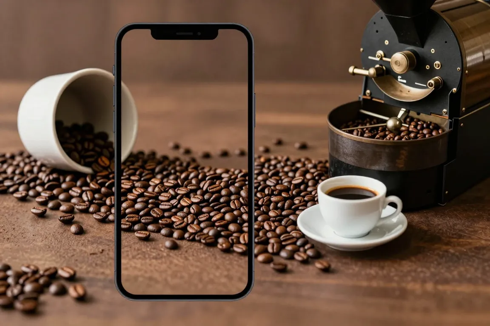

internet · 2018–now · also: Duet video, Side-by-side reaction, Stitch and duet
Two video panels side by side in one vertical frame: the source clip on one half and a new reaction or performance on the other. TikTok added the Duet tool in 2018.

Core thesis
The frame is a conversation: one original clip, one answer, both visible at the same time.
Design principles
Split the 1080 x 1920 px frame into two panels of 540 x 960 px at the centre, or into two halves of 1080 x 960 px.
Keep a 4 px gap in the page colour between the two panels.
Play both audio tracks from one timeline and sync the starts to the frame.
Mark the original creator with a 24 px handle label at the bottom left of its panel.
Give the reacting panel a 2 px accent border (#FE2C55) so the viewer sees who answers.
Keep captions in the dead band under the panels at 40 px, 2 lines at most.
Hold the cut rhythm at 1 cut every 2 s to 3 s on the answer side only.